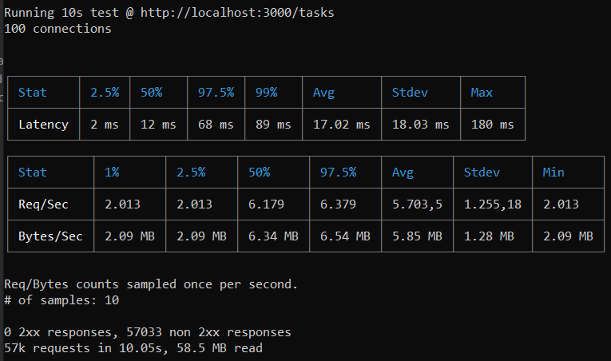

Questões sobre arquitetura
Foi realizado um breve teste de carga para avaliar esse ponto. A princípio, foram utilizadas 100 conexões simultâneas por 10 segundos em um dos principais endpoints da aplicação, que é o endpoint /tasks.
Foi utilizada a ferramenta de teste de carga chamada Autocannon, por meio dos passos a seguir:
- Com a API rodando localmente (http://localhost:3000), foi aberto um novo terminal.
- Foi executado o comando abaixo para simular 100 conexões simultâneas por 10 segundos no endpoint /tasks:
npx autocannon -c 100 -d 10 http://localhost:3000/tasks
O que observar no resultado:
- Req/s (Requests per second): o mais importante. Mostra quantas requisições a API aguentou por segundo, em média.
- Latency (Latência): ,ostra a média, mínimo e máximo do tempo de resposta sob carga. Se a latência média aumentar muito durante o teste, é um sinal de que a API está sobrecarregada.
- 2xx responses: O número de respostas com sucesso. Deve ser igual ao total de requisições. Se aparecerem erros (4xx, 5xx), a API está falhando sob carga.
Resultado
O resultado abaixo do Autocannon evidencia que a API está falhando sob carga, pois nenhuma das quase 50.000 requisições foi bem-sucedida. Apesar de os números de performance parecerem bons, eles medem a velocidade com que o servidor retornou um erro.

A informação mais crítica é que foi obtida zero respostas de sucesso. A aplicação não aguenta a carga de 100 conexões simultâneas e quebra imediatamente. Os números de latência e vazão que você vê são enganosos, pois medem a performance de respostas de erro, que geralmente são muito mais rápidas de gerar do que respostas de sucesso (que podem envolver consultas a banco de dados, etc.).
Em conclusão, percebeu-se que a arquitetura é frágil. Ela pode funcionar sob condições ideais, mas degradará drasticamente assim que a carga atingir seu principal gargalo (provavelmente o banco de dados). Ela não é confiavelmente escalável para 1000 usuários simultâneos.
2. Disponibilidade: Quais são os pontos de falha identificados?
A arquitetura possui múltiplos pontos únicos de falha (SPOF - Single Points of Failure), o que a torna pouco resiliente. Alguns que eu percebi ao longo do estudo das limitações arquiteturais foram:
- Processo do servidor Node.js: se a aplicação travar, todo o serviço fica indisponível. Não há outra instância para assumir a carga. Foi o caso vislumbrado no teste de carga acima, por exemplo.
- Banco de dados (SQLite): diferente de um banco de dados tradicional, o SQLite não é um "servidor" que pode ficar offline. Ele é uma biblioteca rodando dentro do processo Node.js. O ponto de falha aqui é o arquivo do banco de dados (.db). Se ocorrer uma falha de energia ou o servidor for desligado abruptamente durante uma escrita, o arquivo do banco de dados pode ser corrompido, tornando-o ilegível e deixando a aplicação inteira indisponível até que um backup seja restaurado. Problemas de Disco: Como o banco é um arquivo, falhas no sistema de arquivos subjacente (disco cheio, erro de I/O, permissões incorretas) impedem o funcionamento do banco e, consequentemente, da API.
- Máquina host: a infra onde o servidor e o banco de dados rodam é um ponto de falha. Uma falha de hardware, rede ou sistema operacional na máquina derrubará tudo.
- Cache em memória: sendo volátil, qualquer reinicialização do servidor causa a perda total do cache, resultando em uma queda brusca de performance e um pico de carga no banco de dados, o que por si só pode ser um evento que cause uma falha em cascata.
- Serialização de escritas no SQLite: esta é a maior limitação de performance do SQLite para uma API. Ele trava o arquivo de banco de dados inteiro para cada operação de escrita (INSERT, UPDATE, DELETE). Isso força todas as requisições que precisam escrever dados a entrar em uma fila e serem executadas uma de cada vez. Sob carga com múltiplos usuários, isso cria um gargalo massivo e a performance de escrita despenca.
- Queries lentas e falta de índices: embora o SQLite seja rápido, uma query que precise varrer uma tabela inteira (SCAN) sem um índice adequado ainda será extremamente lenta e consumirá recursos de I/O e CPU.
- Operações de CPU síncronas: qualquer código que execute tarefas computacionais intensivas de forma síncrona bloqueará o event loop.
4. Manutenção: Como seria o processo de atualização em produção?
O processo pra fazer manutenção em ambiente de Produção seria manual e com downtime (tempo de inatividade). Algumas etapas possíveis:
- Acessar o servidor.
- Parar o processo atual do Node.js. Neste momento, a API está offline.
- Baixar a nova versão do código (ex: git pull).
- Instalar/atualizar dependências (npm install).
- Iniciar o novo processo do Node.js. A API volta a ficar online.
Esse período de inatividade, mesmo que curto (de segundos a minutos), é inaceitável para muitas aplicações. Para evitar isso, seriam necessárias estratégias como blue-green deployment ou o uso de um cluster com um balanceador de carga, algo que a arquitetura atual não suporta de forma nativa.
5. Evolução: Que mudanças seriam necessárias para suportar múltiplas regiões?
Suportar múltiplas regiões com esta arquitetura exigiria uma rearquitetura completa. Ela é fundamentalmente inadequada para distribuição geográfica devido ao estado local (cache em memória). As mudanças necessárias seriam:
- Externalizar o cache: o primeiro passo seria substituir o cache em memória por um serviço de cache distribuído e gerenciado, como o Redis ou Memcached. Isso permite que instâncias da a aplicação em qualquer lugar do mundo compartilhem o mesmo estado de cache.
- Distribuir o banco de dados: o banco de dados precisaria ser replicado entre as regiões para reduzir a latência de leitura. Usuários na Europa leriam de uma réplica na Europa, enquanto usuários na América do Sul leriam de uma réplica local. A estratégia de escrita (multi-master, etc.) é mais complexa e cara.
- Containerizar a aplicação: empacotar a aplicação Node.js em um contêiner (Docker) para facilitar a implantação consistente em qualquer região.
- Implementar um balanceador de carga global: utilizar um serviço de DNS geográfico ou um balanceador de carga global (como os da AWS, Google Cloud ou Cloudflare) para rotear os usuários para a instância da aplicação geograficamente mais próxima a eles.
- Adotar uma arquitetura stateless: a aplicação em si deve ser projetada para não guardar nenhum estado localmente, dependendo inteiramente de serviços externos (cache, banco de dados) para isso. A arquitetura já está no caminho certo ao usar JWT, que é stateless.